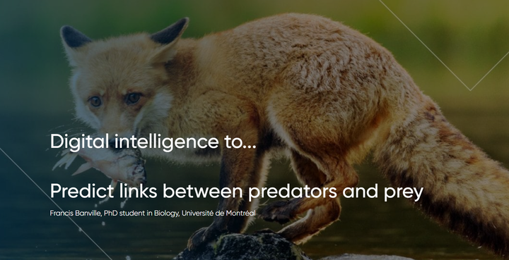

![]()

Artificial intelligence can be used to classify the full set of predation relationships within a biological community. Without it, such a task would be difficult if not inconceivable. Networks made up of predators and their prey are core elements in the operation and stability of every ecosystem, and can be reconstituted based on the total number of species present. But for what purpose? To better protect them.
Bluefin tuna is a staple of the diets of millions of people. It feeds mainly on small fish, which in turn feed on plankton. The decline of a one species within that food chain could have dramatic consequences for bluefin populations, which are already severely affected by commercial fishing. This is a simplified illustration, however, and it paints a somewhat misleading ecological picture. Every biological community comprising a given set of species, aquatic or terrestrial, actually includes multiple interconnected food chains, which, taken together, amount to a network. Such networks, weakened because of human activity, underpin the workings of all ecosystems.
Within these so-called trophic networks, or food webs, two species are linked if they interact. Predators derive energy from feeding on their prey, and through that energy, they play a crucial role in maintenance of the benefits we as humans receive from the environment. Those benefits are indispensable, of course: food chains provide considerable services to humankind every year. To that end, proper protection of ecosystems requires a thorough understanding of their trophic networks. Accounting for all the interactions between species in a given place, however, demands considerable human and financial resources. For example, determining whether a jackal interacts with an antelope in a given natural setting may require several hours of painstaking work. Data collected on trophic networks are therefore limited, posing a major obstacle to studying them on a large scale.
The objective of my research project, given the scarcity of data on predation relationships, is to develop a method for predicting how interactions in a trophic network are organized. To do so, I use the total number of species within a biological community, which is by far the most studied and quantified measure of biodiversity in ecology. Estimates of total species counts in a network are generally accurate, even when not all species have been identified.
Myriad ecological issues can therefore be explored without knowing the exact identity of predators and prey. Ecologists often focus on the way interactions are organized within a biological community to understand how it functions. For example, an invasive species generally has more difficulty becoming part of a network in which species interact a lot with each other; that is, a network that is virtually saturated with interactions. The total number of interactions in a network is thus a primary source of information about its stability and resilience to natural disruptions. Many other aspects of trophic network structure are also factors in the functioning of biological communities; for example, the presence of groups of species whose members interact extensively with each other. By accurately predicting the structure of food webs, we can thus better study the consequences of environmental disasters on the functioning of ecosystems.
The number of species is a fundamental measure of any trophic network, as it is also closely associated with the total number of interactions. A community with a high number of species typically has an even higher number of interactions. With my research team, I modelled this association while controlling for ecological constraints on the minimum and maximum number of interactions. For example, a community composed exclusively of a herbivore that feeds on a few plant species would have the minimum number of interactions, while one made up of cannibalistic carnivores—that is, a community saturated in interactions—would have the maximum number of interactions. Between these two extremes, a fraction of the potential interactions occurs. We therefore modelled the probability that a given interaction would happen.
After a large number of simulations, we obtained the total number of predicted interactions within a network. As an example, take Mount Royal Park, on the Island of Montréal. According to the group Les amis de la montagne (friends of the mountain), it is home to no fewer than 700 plant species, 180 avian species, and 20 mammalian species. The total number of interactions in this trophic network made up of 900 species, approximately 65,000, can be predicted using our model.
Although the total number of interactions is itself informative, it is also linked to the way in which those interactions are organized within a given network. The next phase of my research project will therefore harness the results obtained thus far to more specifically predict the organizational structure of the links within a trophic network based on the number of species and the predicted number of interactions. The significant biodiversity loss resulting from environmental disasters may drastically alter the functioning of ecosystems by modifying the structure of their trophic networks. I therefore aim to use the results of my project to pave the way for better simulation of the consequences of climate change and natural-habitat destruction on trophic networks, so as to identify effective measures for limiting those harmful impacts.
This article was produced by me with the guidance of Marie-Paule Primeau, science communication advisor, as part of IVADO’s “My research project in 800 words” initiative.
Find some of my videos on IVADO’s Youtube channel!
Mon projet de recherche IVADO en 800 mots
First Estimates of Food Web Structure Derived from Species Richness
Octobre Numérique IVADO 2020
The original version of this blog post can be found on IVADO’s website. This article is also available in French.
Citation
@online{banville2021,
author = {Banville, Francis and Primeau, Marie-Paule},
title = {Digital Intelligence to... {Predict} Links Between Predators
and Prey},
date = {2021-11-17},
url = {https://francisbanville.github.io/posts/2023-03-07-digital-intelligence/},
langid = {en}
}